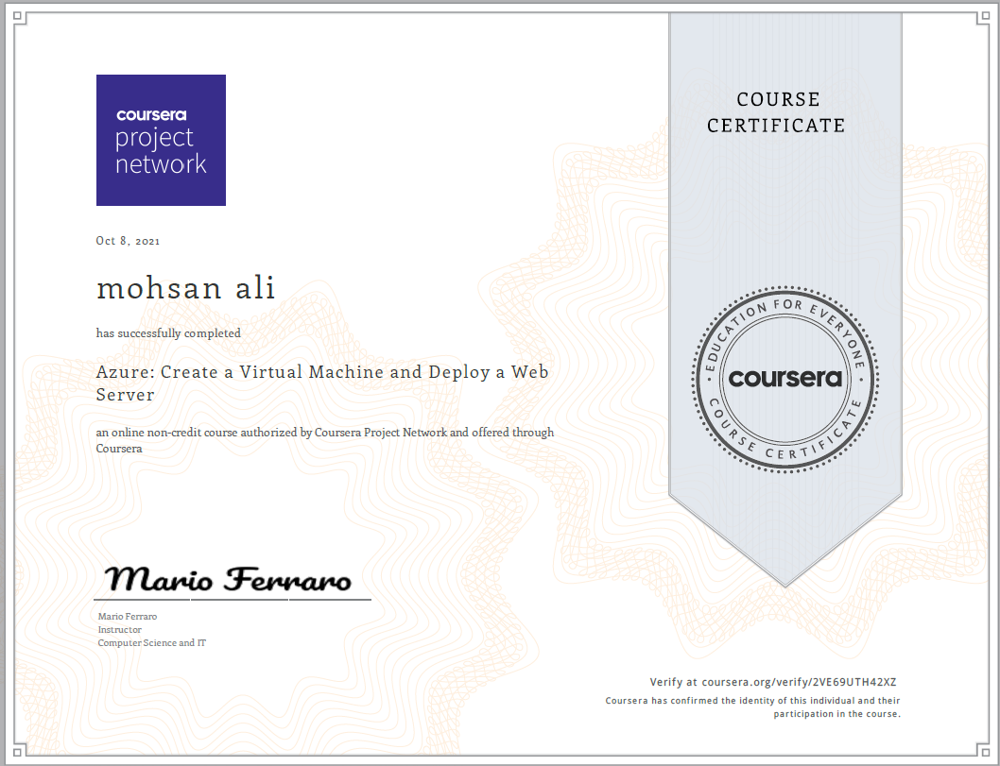
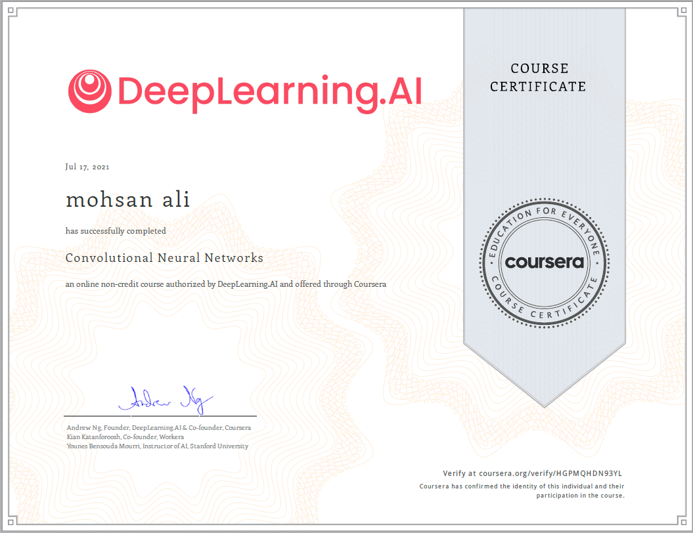
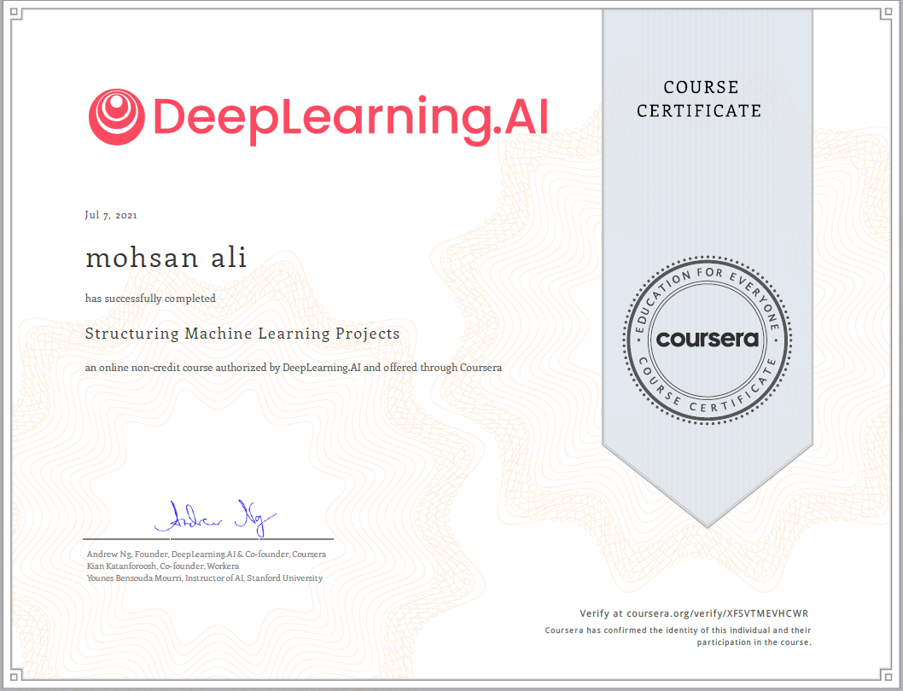
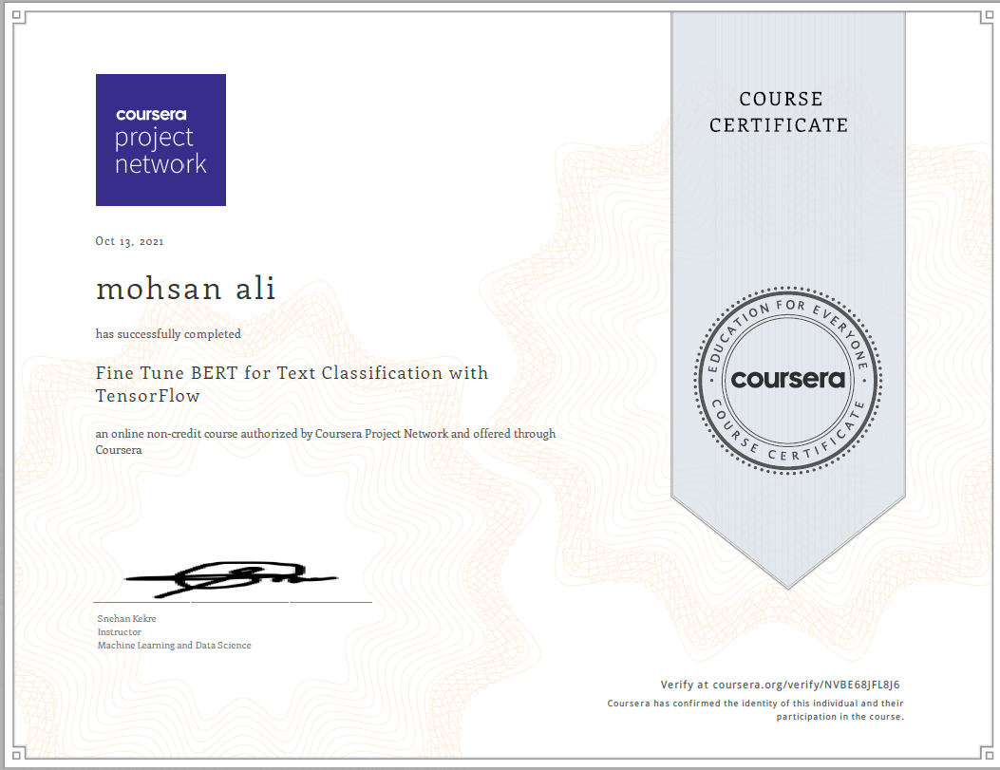
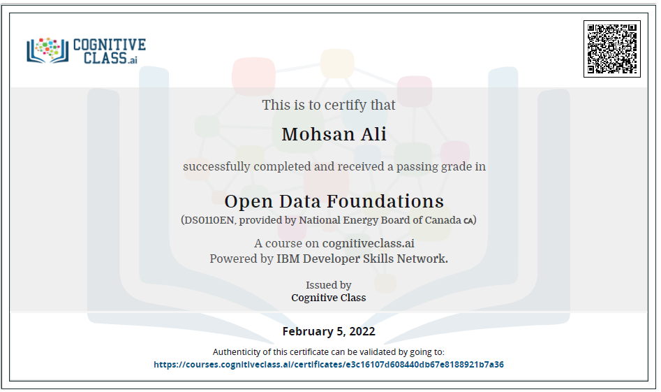
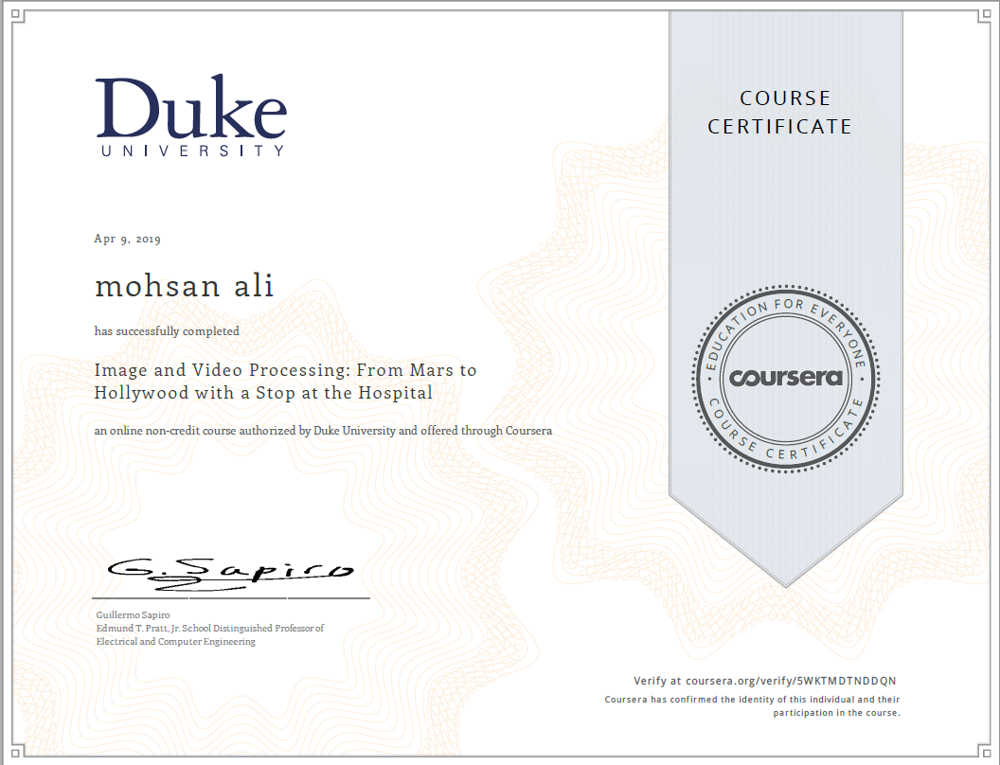

Supportive Certifications
- All
- Deep Learning
- Data Science
- Open Data
- Natural Language Processing
- Image Processing

A Crash Course in Data Science
Coursera


Azure Deployment
Course Era


Convolutional Neural Network
Coursera

Improving Neural Network
Coursera

Neural Networks and Deep Learning
Coursera


structuring Machine Learning Projects
Coursera


BERT for Text Classification
Coursera


Open Data Foundation(Candaian Perspective)
Coursera


Image Processing
Duke University